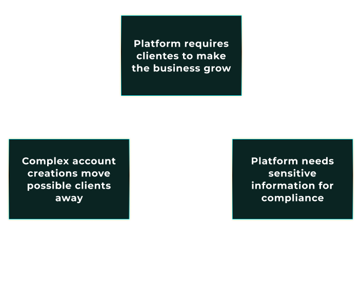
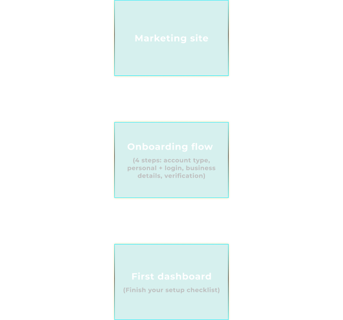
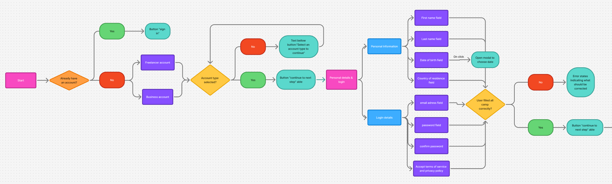
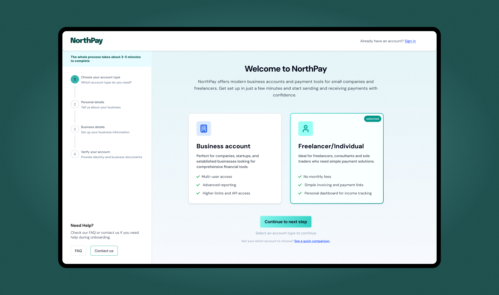
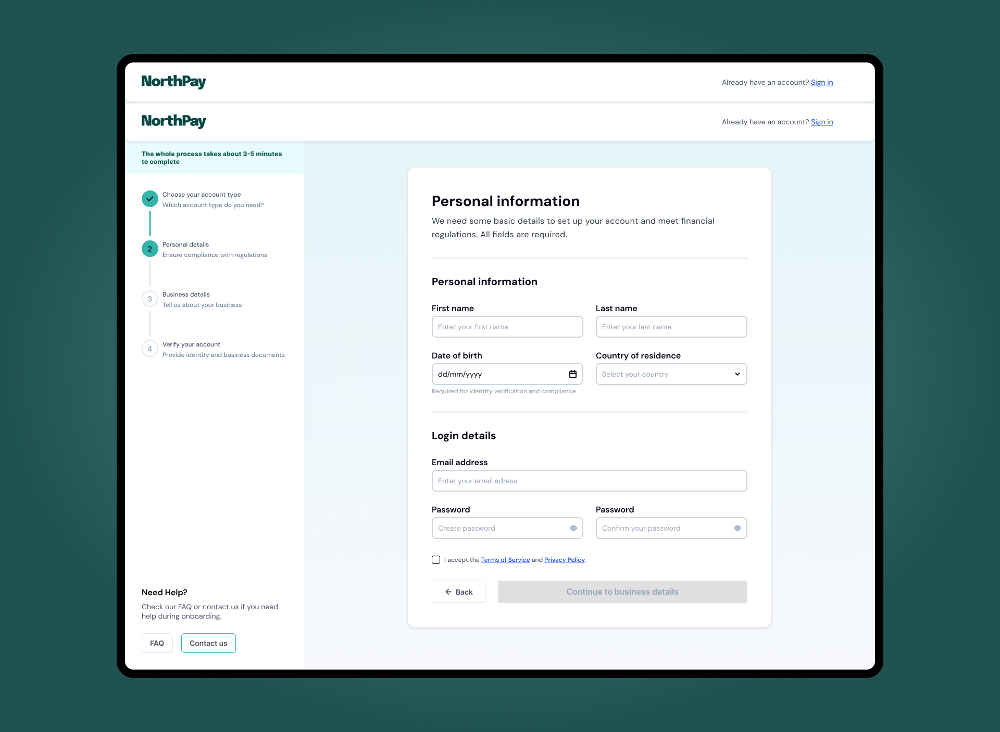
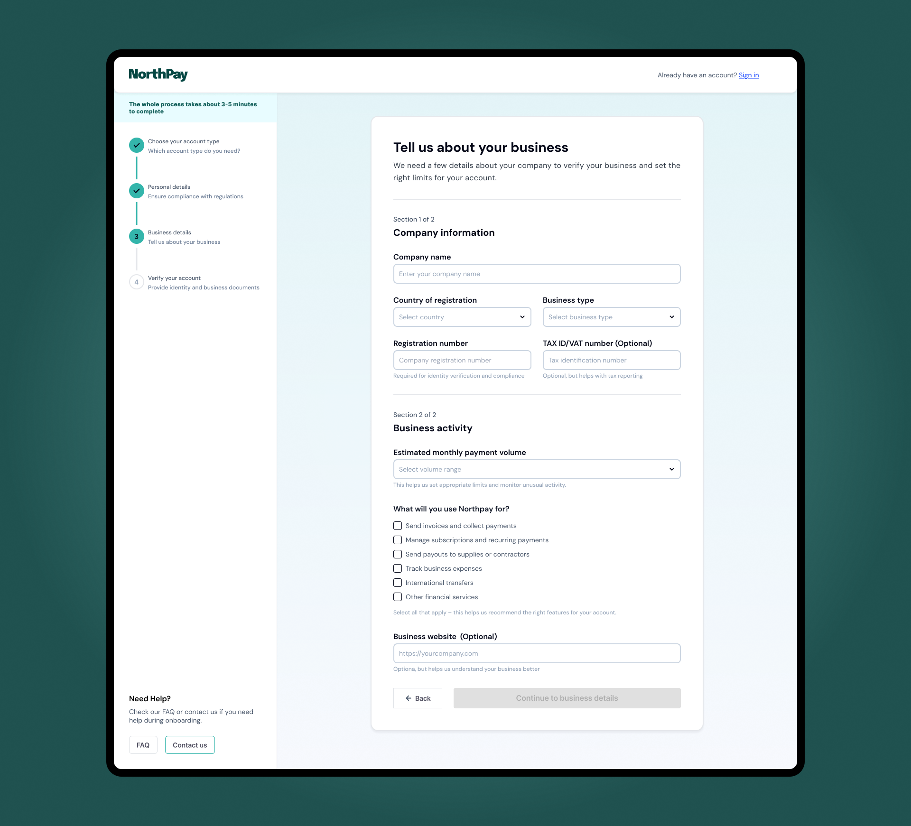
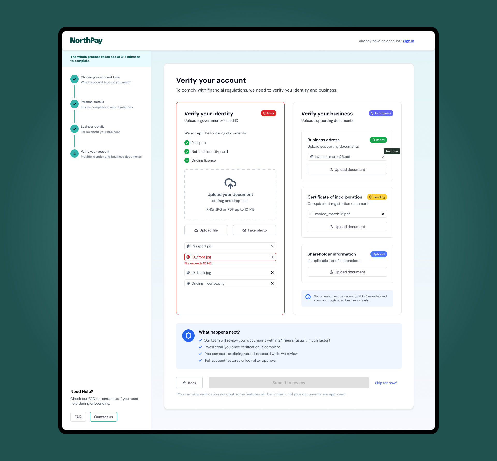
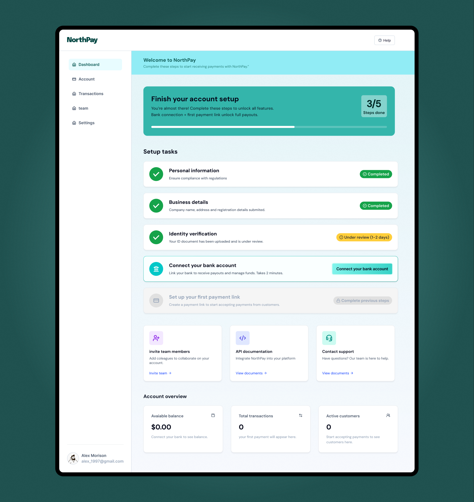

NorthPay is a concept for a modern fintech platform that offers business accounts and payment tools for small companies and freelancers. This case focuses on the onboarding and verification experience: from choosing the right account type to completing KYC and landing on a first dashboard that actually guides users to their first payout. I was responsible for the full UX and UI process, including information architecture, user flows, wireframes, interface design and interaction states.

NorthPay represents a common challenge in financial products: in order to stay compliant,
the business needs to collect sensitive information and documents, but every extra step
makes people more likely to drop out. The friction is not in the day-to-day app usage –
it is at the very beginning, when users are creating an account, sharing personal and
business details, and going through KYC checks before they can do anything useful.
From a business perspective, this early stage is where growth can easily stall. Long forms,
unclear requirements and poor feedback often lead to high drop-off rates and support tickets
from people asking “Did you receive my documents?” or “Why was I rejected?”. NorthPay’s
onboarding is treated as a strategic lever to convert more qualified sign-ups into verified,
active accounts while still meeting compliance requirements.

For users – especially small business owners and freelancers – opening a financial account
is stressful. They are busy, they do not fully understand the regulatory requirements and they
are worried about sharing documents with yet another provider. Traditional onboarding flows
often make this worse with long walls of fields, hidden progress and vague error messages.
The result is a mix of anxiety and confusion. People do not know how many steps are left, why
certain information is needed, what happens after they upload documents or how long the
verification will take. This uncertainty is often enough to make them abandon the process or
postpone it indefinitely, even if they were initially motivated to start using the product.
NorthPay’s onboarding is designed to make each step explicit, so users always know what is
happening and how close they are to being fully approved.
The design challenge for NorthPay was to turn a heavy, compliance-driven process into a guided,
transparent experience that people can actually complete. The onboarding needed to collect all
the required personal, business and KYC information, but in a way that feels structured,
predictable and honest about what is happening at each step.
This case study focuses on the end-to-end journey from “Create account” on the marketing site
to landing on the first dashboard. The goal was to define the information architecture, structure
each step and design the interfaces and microcopy that reduce friction while still supporting the
reality of fintech regulation. In short: make it as easy as possible to get to “first payout”
without cutting corners on compliance.
The diagram maps these three core surfaces: marketing site, onboarding flow and first dashboard
that the project focuses on.

To design the onboarding experience, I first separated NorthPay into two structural areas:
the public marketing site and the authenticated web app. The marketing site is responsible
for acquisition and initial education. The onboarding flow lives at the threshold between
both worlds and is treated as its own product surface, with different constraints and
priorities than the day-to-day dashboard.
Within onboarding, I defined a four-step flow that follows how people actually think about
opening an account. First they choose what kind of account they need (business or freelancer),
then they provide personal details and set up their login, then they share what their business
looks like and how it operates, and finally they prove that everything is legitimate through
identity and business verification. This becomes: account type, personal details and login,
business details and verification (KYC).
On top of the linear flow, I mapped a decision diagram that shows what happens when users choose
a business versus a freelancer account, and how different verification outcomes change the
experience. Approved users land on a full dashboard with all features unlocked. Users in review
see a limited dashboard with a clear status and an estimated review time. Users who are rejected
are guided to support instead of being left in a dead end. This structure keeps the flow predictable
while handling real-world outcomes.

Before touching visual design, I created low-fidelity wireframes for each step to validate
structure, copy and interaction patterns. A persistent stepper on the left gives users a
mental model of where they are and how many steps are left. Each screen has one primary goal:
choosing the account type, providing personal details, describing the business or uploading
verification documents. Secondary actions like “See a quick comparison” or “Need help?” are
present, but visually deprioritised so they do not compete with the main task.
In the form steps, fields are grouped into meaningful sections instead of one long list.
Personal information and login details are separated, and within business details the
information is split into “Company information” and “Business activity”. Only optional
fields are explicitly labelled as optional, which reduces noise and keeps attention
on what must be completed. Questions about payment volume and how the business will
use NorthPay are framed in terms of limits and feature recommendations, so users
understand why those questions exist.
The verification step uses two parallel panels – one for identity, one for business –
to mirror how fintech teams think about KYC: two different risk checks that need to be
completed. Each document slot has a clear label, accepted formats and file-size limits,
so people are not surprised after uploading. Wireframing at this level allowed me to
tune the amount of information per screen and make sure each step felt dense but
finishable.
Beyond the static layout, much of the UX work in NorthPay lives in how the interface behaves.
The onboarding stepper on the left is always visible and updates in real time, so users
never feel lost inside a long form. Moving back to a previous step does not wipe data,
which makes it safe to review information without the fear of breaking the flow. The
primary action button stays disabled until required fields are valid, making the path
forward explicit without relying on generic error modals.
Error states are handled inline, next to the fields that need attention. Messages explain
how to fix the issue instead of showing a single red banner at the top of the page. In the
business details step, for example, invalid registration numbers or missing volume ranges
are highlighted exactly where the user needs to act. On the personal details screen,
mismatched passwords and invalid emails use clear microcopy such as “Enter a valid email
address” and “The passwords do not match”.
Verification states follow the same principle. Identity and business checks each have
their own status, from “Not started” to “In progress”, “Ready to submit”, “In review”
and “Approved”. When users submit their documents, a “What happens next?” panel sets
expectations around review time, email notifications and which features will be limited
until approval. On the first dashboard, a setup checklist continues this language with
statuses like “Completed” and “Under review”. Together, these patterns reduce anxiety
in a context where uncertainty is usually high.
NorthPay’s visual language is designed to feel modern and trustworthy without looking
like a bank from the past. The palette combines a deep green accent with soft mint
backgrounds and neutral greys, which keeps the interface calm while still giving
important actions and statuses a clear highlight. Gradients are used only in
high-level surfaces such as the onboarding header and the activation banner on the
dashboard, so the content areas stay clean and easy to scan.
Layouts follow a consistent shell: a left column for navigation and progress, and
a central canvas for the primary task. Cards, checklists and badges repeat across
onboarding, verification and the first dashboard so users do not have to relearn
patterns at each step. Form fields and tables use generous spacing and predictable
alignment, avoiding decorative elements that could compete with critical information.
States are treated as first-class elements of the visual system. Success, error and
“in review” statuses use distinct colors and chip styles that are reused from the KYC
flow to the setup checklist in the dashboard. This makes it easy to understand at a
glance what is done, what is blocked and what is still pending. The result is a fintech
onboarding experience that feels cohesive from the first account-type choice to the
moment the user connects a bank and is ready to receive payments.
NorthPay is a concept project, but the constraints are very real:
regulation, risk, anxiety about sharing documents and the pressure
to activate new accounts as fast as possible. My role here was to
treat onboarding as a product in itself – defining the information
architecture, mapping the decision flow, designing the key screens
and interactions, and then shaping a visual language that supports
clarity and trust instead of getting in the way.
For hiring managers and product teams, this case highlights how I
approach complex flows in regulated environments: start from business
and user problems, make the structure explicit, design for states and
edge cases and only then polish the visual layer. The result is an
experience that is compliant by design, but still feels simple and
guided for the people using it. This is the mindset I bring to B2B SaaS
and fintech products that need both strong UX and measurable impact on
activation and revenue.





{kind=link}
{kind=link}
{kind=link}
{kind=link}
{kind=link}